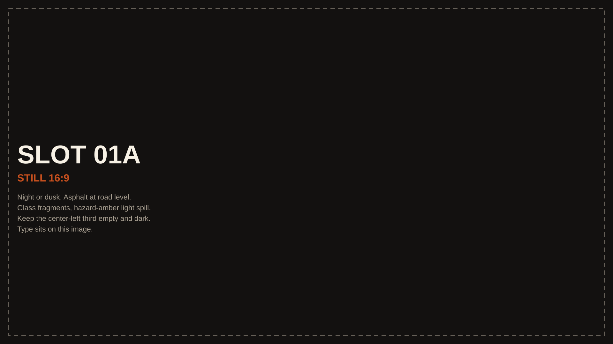

Tow & intake
The car arrives, gets photographed and logged, and a first estimate is written from what's visible.
Stalls when: the car sits at a tow yard before it ever reaches a shop.

The first hour after a crash is loud.
Betterment. LKQ. Supplement. Teardown. Total loss. ACV. Diminished value. DRP. OEM procedures. All at once, with no definitions.
No definitions attached. This is how it actually arrives.
Nobody hands you a dictionary.

I'm a collision estimator in Los Angeles. I write repair estimates all day, every day. The words you just scrolled through are the language of my desk.
Nobody hands drivers a translator. So I made one.
Your Crash AngelAngel is my actual name. This is my actual job.
Every word from the pile. One plain sentence each. Scroll slowly.
If a new part leaves your car better than before the crash, you can be asked to pay the difference.
Taking the damaged area apart to find everything the crash actually broke.
Anything added to the estimate after the first write-up. Usually damage found at teardown.
A used part from a car like yours, in similar condition. Like Kind and Quality.
The repair steps written by the company that built your car.
What your car was worth the moment before the crash. Actual Cash Value.
Fixing the car would cost too much of what the car is worth.
The value a car can lose just for having been hit.
A shop that works directly with an insurance company on repairs and paperwork. Direct Repair Program.
Five stages. Every claim walks this same road. The speed depends on the middle stages.
The car arrives, gets photographed and logged, and a first estimate is written from what's visible.
Stalls when: the car sits at a tow yard before it ever reaches a shop.

The damaged area comes apart. This is where the real repair list gets written.
Stalls when: hidden damage means the plan has to change.

The new findings are documented, priced, and sent for review.
Stalls when: the paperwork is in review. The car waits, not the people.

Parts come in, metal gets straightened, panels get painted to match.
Stalls when: a part is on backorder.

Everything goes back together, systems get checked, the car gets cleaned and returned.
Stalls when: the final check finds something that needs another pass.
“A supplement means something went wrong.”
It means the teardown did its job. Finding hidden damage is the point.
“More days in the shop means worse work.”
Most of the calendar is parts and paperwork, not repair time.
“A totaled car was beyond fixing.”
Total loss is math. Repair cost against the car's value, nothing more.
You don't have to remember any of this.
When it happens, call someone who reads these files every day.
Angel Navarro · collision estimator · Los Angeles
(213) 279-2992